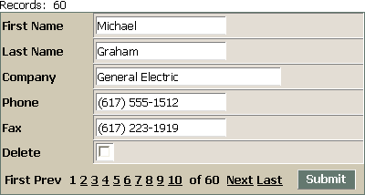

Creating a Grid that Looks Like a Dialog
Many users would like to create a dialog component that is bound to a table, and thereby provide record level record addition, deletion, and editing. If you are familiar with Xbasic, the task is fairly simple. However, if you would like a no-programming solution, the answer is create a grid component that looks like a dialog component.
Open the Web Projects Control Panel.
Click New > Alpha Five Web Component > OK > Grid > OK.
On the Component Type page of the menus, select "Columnar" in the Grid layout list.
Display the Grid > Data Source page and select the appropriate data source for your application (in this example we selected Alpha Five .dbf Tables ).
Display the Grid > Query page and select the table or view that is providing the data (in this example we selected "Customer" from the Table Name list).
Display the Grid > Fields page.
Select and format the fields you wish to display.
Display the Grid > Properties page.
Change the value in the Layout Options > Rows of data property to 2.
Display the Grid > Update Settings page.
Change the value in the Permissions > Number of new record rows property to 1.
Select the Permissions > Show new records on last page only check box.
Display the Grid > Properties page.
Change the value in the Layout Options > Rows of data property to 1.
The results should look something like the following.

See Also